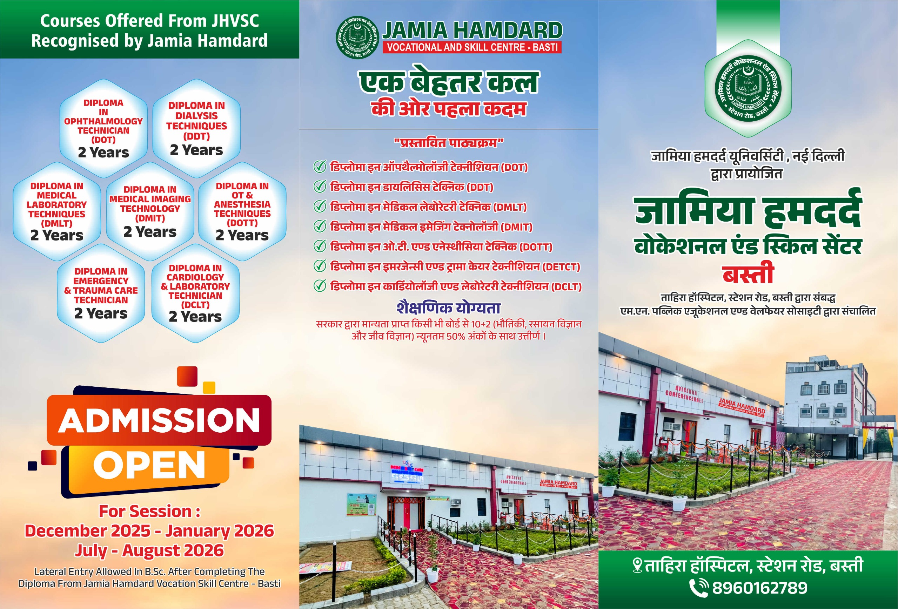
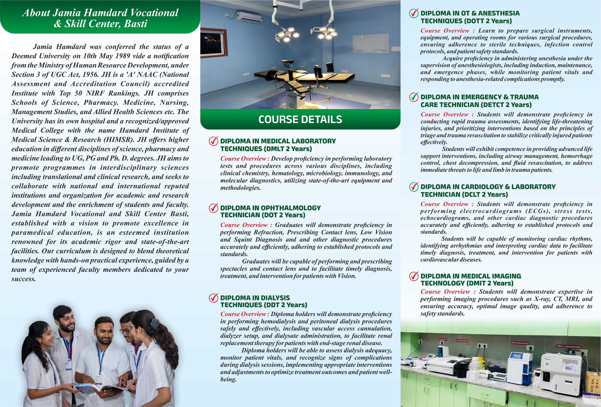

Eligibility: 10+2 (PCB) with 50% marks.
Graduates will develop proficiency in performing laboratory tests and procedures across clinical chemistry, hematology, microbiology, immunology, and molecular diagnostics, using state-of-the-art equipment and methodologies.
Graduates will be proficient in refraction, spectacle and contact lens prescription, low vision assessment, squint diagnosis, and other ophthalmic diagnostic procedures, performed accurately and in accordance with established protocols and standards. They will support timely diagnosis, treatment, and intervention for patients with vision-related conditions.
Graduates will competently perform hemodialysis and peritoneal dialysis, including vascular access cannulation, dialyzer setup, and dialysate administration. They will monitor dialysis adequacy and patient vitals, identify complications, and implement appropriate interventions to ensure effective renal replacement therapy and patient safety.
This program trains students to prepare and manage operating rooms, surgical instruments, and equipment while strictly following sterile techniques, infection control measures, and patient safety standards. It also develops competence in administering anesthesia under anesthesiologist supervision, covering induction, maintenance, and recovery phases, along with continuous monitoring of patient vitals and prompt management of anesthesia-related complications.
This course equips students with the skills required to perform rapid trauma assessments, identify life-threatening conditions, and prioritize care using principles of triage and trauma resuscitation. Graduates are trained in advanced life support procedures such as airway management, hemorrhage control, chest decompression, and fluid resuscitation to stabilize critically injured patients.
This program focuses on developing proficiency in cardiac diagnostic procedures including ECGs, stress tests, echocardiography, and related investigations, in compliance with established medical protocols. Students learn to monitor cardiac rhythms, detect arrhythmias, and interpret cardiac data to support timely diagnosis, treatment, and clinical decision-making for cardiovascular conditions.
This course prepares students to competently perform medical imaging procedures such as X-ray, CT, and MRI with a strong emphasis on accuracy, image quality, and patient safety. Training includes adherence to radiation safety norms and standardized imaging protocols to support effective clinical diagnosis.
Educational and recruitment roadmap for JHVSC graduates.
• MSc Medical Laboratory Sciences • MSc Microbiology • MSc Biochemistry • PhD
• State health department exams • AIIMS CRE • Research assistant exams
• MSc Optometry • Clinical Optometry • PhD
• Central exams • Hospital interviews
• Degree or diploma as notified • Contract based recruitment • State health society
• State NHM recruitment • Hospital contracts • AIIMS CRE • RRB • ESIC recruitment
• MSc Anaesthesia & OT Technology • MSc Critical CareMSc Dialysis Therapy / Techniques
• Hospital based recruitment
• Recognized EMT degree • State EMS exams • Physical fitness norms
• State EMS recruitment • Disaster response exams
• Recognized degree • Hospital based recruitment • Limited direct exam posts
• Hospital level recruitment tests • State exams
• Degree from recognized university • State recruitment exams • Contractual hiring under NHM
• State allied health recruitment exams • AIIMS CRE • DSSSB • ESIC recruitment
Comprehensive breakdown of professional scope, recruiters, and earning potential.
• Lab technologist in government and private hospitals, pathology labs. • Public health labs and disease surveillance centres. • Blood banks, microbiology labs, clinical research labs. • Quality assurance, lab management roles. • Possible research and teaching after MSc or PhD
•High demand in developed countries for clinical lab scientists. •May require credentialing (ASCP in US)
•Medical Laboratory Technologist •Lab Supervisor •Public Health Lab Analyst
•Pathology labs •Corporate hospitals • Research labs • Pharma companies
• Optometrist in government and private eye hospitals, vision centres. • Optical retail chains and lens manufacturers. • Possibility to open private practice or optical shop. • Teaching and higher studies (M.Optom).Ophthalmic assistant/technician in eye hospitals, optical chains, community health centers, and vision screening programs
• Very strong demand globally. • Licensing/registration needed (eg NCLE in US, OPTOM in UK) • Higher earnings and advanced practice roles
• Optometrist • Vision Care Officer
• Eye hospitals • Optical retail chains • Private clinics • Lens companies
• Dialysis technician in hospital nephrology units and standalone dialysis centres. • Government hospital dialysis units. • Private chains and kidney care centres. • Roles include machine operation, patient monitoring, emergency care
• High demand in countries with ageing populations. • Certification often required
• Dialysis Technician • Renal Care Technologist
• Private dialysis centres • Corporate hospitals • Home dialysis servicesSpecialized dialysis centers, Multi-specialty hospitals, Dialysis equipment companies.
• Anaesthesia technologist or OT technologist in public and private hospitals. • Roles in ICU, emergency theatres, surgical centres, CSSD, Endoscopy, Manifold Room. • Set up and maintain anaesthesia equipment, assist anaesthesiologists
• Overseas demand, especially for certified surgical technologists. • Recognition by professional bodies often required
• Anaesthesia Technologist • OT Technologist
• Corporate hospitals • Surgical centres • Day care surgery units
• Work with ambulance services and emergency departments. • Government EMS, Defence medical corps & NGOs. • Private rescue and trauma care services. • Roles include first responder, patient stabilization during transport & Disaster Management
• Strong demand in US, Canada, Australia, Middle East. • Must obtain EMT/Paramedic certification in destination country
• Emergency Medical Technician • Paramedic • Disaster Response Staff
• Ambulance services • Trauma centres • Industrial safety units
• Work in cardiology departments of public and private hospitals. • Roles include ECG/ECHO technologist, cardiac cath lab support. • Intensive care units, cardiac rehabilitation. • Emerging demand as cardiovascular diseases rise
• Cardiovascular Technologist • ECG/ECHO Technician • Cath Lab Technologist • Cardiac Rehabilitation Specialist
• Cardiac Technologist • ECG ECHO Technician • Cath Lab Technologist
• Corporate cardiac hospitals • Cath labs • ICUs • Diagnostic centres
• Work as Radiographer or Imaging Technologist in hospitals, diagnostic centres, clinics. • Public hospitals, Railways, Defence medical services hire imaging technologists. • Government diagnostic labs and health departments recruit imaging staff. • Private healthcare chains (Apollo, Fortis, Medanta, SRL Diagnostics) employ imaging technologists. • Roles include X-ray, CT, MRI, DSA, ultrasound operation, PACS admin, radiology support. • Teaching and research positions open after higher degrees (MSc/PhD)
• Demand in US, UK, Canada, Gulf and Australia for imaging technologists. • Need certification/licensing (ARRT in US, HCPC in UK). • Roles similar to India, often with higher pay
• Radiographer • Imaging Technologist • CT MRI Technician • PACS Technician
• Corporate hospitals • Diagnostic chains • Imaging centres • Medical equipment companies